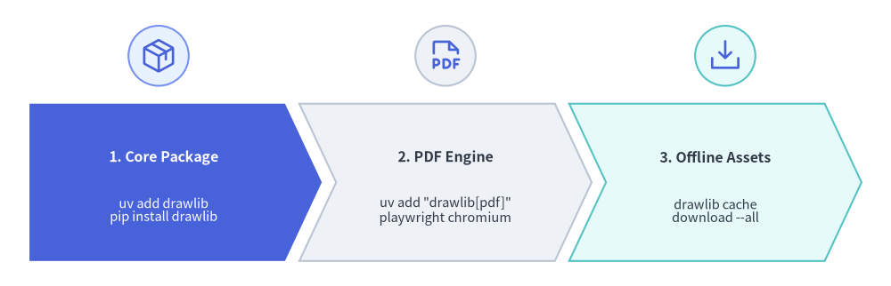
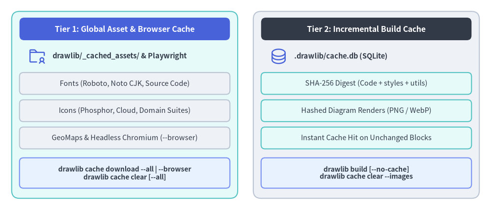

Installation Guide
Drawlib is published on PyPI and can be installed using uv (recommended) or standard pip.
A single drawlib installation includes built-in HTML, Markdown, vector PDF, MS Word (.docx), and MS PowerPoint (.pptx) exporters, automatic headless Chromium provisioning, and offline asset caching.

Source Code
from drawlib.canvas import save, setup
from drawlib.icons import phosphor
from drawlib.shapes import circle
from drawlib.smartarts import ChevronProcess
from drawlib.styles import Styles
setup(width=124, height=40)
workflow = ChevronProcess(
style=Styles.Neutral,
text_style=Styles.DarkBold.patch(text_size=11.5),
description_style=Styles.Dark.patch(text_size=10.5),
corner_angle=65.0,
spacing=2.0,
flat_left_end=True,
)
workflow.add(
"1. Install Drawlib",
description="uv add drawlib\npip install drawlib",
style=Styles.PrimaryFlat,
text_style=Styles.WhiteBold.patch(text_size=11.5),
description_style=Styles.White.patch(text_size=10.5),
)
workflow.add(
"2. Zero-Config Export",
description="PDF, .docx & .pptx\nAuto Headless Chrome",
style=Styles.Neutral,
)
workflow.add(
"3. Offline Assets",
description="drawlib cache\ndownload --all",
style=Styles.SecondaryNeutral,
)
workflow.draw(xy=(4.0, 3.5), width=116.0, height=22.0)
# Step icons above each chevron stage
circle((22.0, 32.2), radius=4.2, style=Styles.PrimaryNeutral)
phosphor.package((22.0, 32.2), width=5.2, style=Styles.Primary)
circle((62.0, 32.2), radius=4.2, style=Styles.Neutral)
phosphor.file_pdf((62.0, 32.2), width=5.2, style=Styles.Primary)
circle((101.0, 32.2), radius=4.2, style=Styles.SecondaryNeutral)
phosphor.download_simple((101.0, 32.2), width=5.2, style=Styles.Primary)
save()
Requirements
- Python: Version 3.11 or higher.
- Operating System: Linux, macOS, or Windows.
1. Using uv (Recommended)
Add Drawlib to your current project dependencies:
# Add to active project (includes PDF, .docx, and .pptx export out of the box)
$ uv add drawlib
# Verify installation and CLI version
$ uv run drawlib --version
Standalone CLI Execution (uvx)
If you want to run the Drawlib CLI tool without adding it to a project:
$ uvx drawlib --version
$ uvx drawlib init site
2. Using pip
Install Drawlib into your virtual environment:
$ pip install drawlib
# Verify installation
$ drawlib --version
3. Built-In PDF, Word (.docx) & PowerPoint (.pptx) Export
Drawlib includes playwright, python-docx, and python-pptx as standard dependencies—no optional package extras or manual browser installation steps are required:
- MS Word (
drawlib build docx): Runs in pure Python with zero browser dependencies. - Vector PDF (
drawlib build pdf) & MS PowerPoint (drawlib build pptx): Automatically downloads Playwright's lightweightchromium-headless-shellon first run (or pre-fetches it ahead of time viadrawlib cache download --browser).
[!NOTE] Minimal Linux Containers & Slim CI Runners: Standard desktop macOS, Windows, and Ubuntu/Debian environments work with zero setup. In minimal Linux container images (such as
python:3.12-slim) that omit system GUI shared libraries (libnss3,libgbm1,libasound2), install the OS-level shared libraries once:$ uv run playwright install-deps chromium
4. Asset & Build Cache Management (drawlib cache)
To maintain a minimal PyPI package size, high-resolution icon sets (Phosphor, FontAwesome, and official cloud/domain icons), multilingual fonts, geographic map datasets, and headless Chromium are downloaded on demand upon first use (or pre-fetched via drawlib cache download). Meanwhile, project-local incremental diagram builds are cached separately in .drawlib/cache.db.

Source Code
from drawlib.canvas import save, setup
from drawlib.icons import phosphor
from drawlib.shapes import rectangle
from drawlib.styles import Styles
from drawlib.text import text
setup(width=126, height=54)
hdr_ts = Styles.WhiteBold.patch(text_size=11.5)
path_ts = Styles.DarkBold.patch(text_size=10.5, halign="left")
row_ts = Styles.Dark.patch(text_size=10.5)
cmd_ts = Styles.DarkBold.patch(text_size=10.0)
# Left container: Tier 1 Global Asset Cache
rectangle((32.0, 27.0), width=58.0, height=48.0, style=Styles.SecondaryNeutral.patch(shape_r=2.0))
rectangle((32.0, 46.5), width=54.0, height=5.8, style=Styles.PrimaryFlat.patch(shape_r=1.2), text="Tier 1: Global Asset & Browser Cache", text_style=hdr_ts)
phosphor.folder_user((9.5, 39.5), width=4.8, style=Styles.Primary)
text((13.5, 39.5), "drawlib/_cached_assets/ & Playwright", style=path_ts)
rectangle((32.0, 32.5), width=54.0, height=5.6, style=Styles.Neutral.patch(shape_r=1.0), text="Fonts (Roboto, Noto CJK, Source Code)", text_style=row_ts)
rectangle((32.0, 25.5), width=54.0, height=5.6, style=Styles.Neutral.patch(shape_r=1.0), text="Icons (Phosphor, Cloud, Domain Suites)", text_style=row_ts)
rectangle((32.0, 18.5), width=54.0, height=5.6, style=Styles.Neutral.patch(shape_r=1.0), text="GeoMaps & Headless Chromium (--browser)", text_style=row_ts)
rectangle((32.0, 9.5), width=54.0, height=7.8, style=Styles.PrimaryNeutral.patch(shape_r=1.0), text="drawlib cache download --all | --browser\ndrawlib cache clear [--all]", text_style=cmd_ts)
# Right container: Tier 2 Project Incremental Build Cache
rectangle((94.0, 27.0), width=58.0, height=48.0, style=Styles.Neutral.patch(shape_r=2.0))
rectangle((94.0, 46.5), width=54.0, height=5.8, style=Styles.DarkFlat.patch(shape_r=1.2), text="Tier 2: Incremental Build Cache", text_style=hdr_ts)
phosphor.database((71.5, 39.5), width=4.8, style=Styles.Primary)
text((75.5, 39.5), ".drawlib/cache.db (SQLite)", style=path_ts)
rectangle((94.0, 32.5), width=54.0, height=5.6, style=Styles.SecondaryNeutral.patch(shape_r=1.0), text="SHA-256 Digest (Code + styles + utils)", text_style=row_ts)
rectangle((94.0, 25.5), width=54.0, height=5.6, style=Styles.SecondaryNeutral.patch(shape_r=1.0), text="Hashed Diagram Renders (PNG / WebP)", text_style=row_ts)
rectangle((94.0, 18.5), width=54.0, height=5.6, style=Styles.SecondaryNeutral.patch(shape_r=1.0), text="Instant Cache Hit on Unchanged Blocks", text_style=row_ts)
rectangle((94.0, 9.5), width=54.0, height=7.8, style=Styles.PrimaryNeutral.patch(shape_r=1.0), text="drawlib build [--no-cache]\ndrawlib cache clear --images", text_style=cmd_ts)
save()
You can inspect, pre-fetch (e.g. for offline builds, Docker images, or CI/CD pipelines), and clear both caches via drawlib cache:
# Inspect cached font, icon, and map packages
$ uv run drawlib cache list
# Pre-download all font, icon, map, and headless Chromium assets
$ uv run drawlib cache download --all
# Or pre-download specific asset categories selectively
$ uv run drawlib cache download --fonts
$ uv run drawlib cache download --icons
$ uv run drawlib cache download --maps
$ uv run drawlib cache download --browser
# Clear project-local incremental diagram build cache (.drawlib/cache.db)
$ uv run drawlib cache clear --images
# Clear all caches (downloaded font/icon/map assets + SQLite image build cache)
$ uv run drawlib cache clear --all
5. Verifying Installation
Verify that the Drawlib CLI commands and rule guides are accessible:
$ uv run drawlib --help
$ uv run drawlib rules list